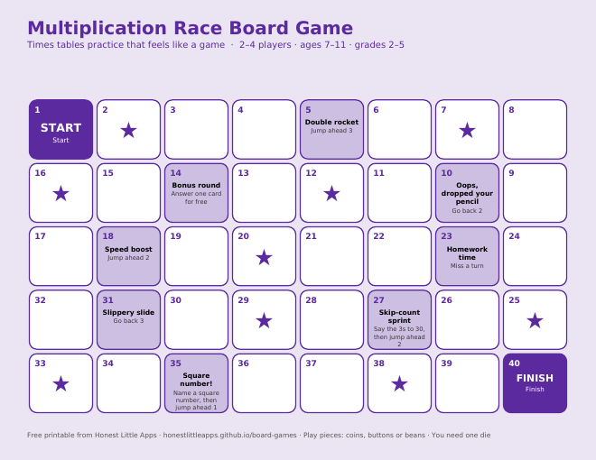
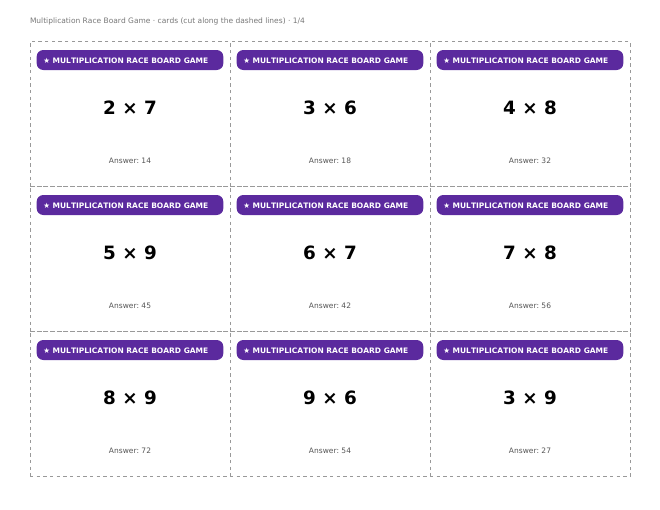

Printable Board Games › Multiplication Race Board Game
Multiplication Race Board Game (Free Printable)
Roll, race and multiply. Quick to learn, great for times tables 2–12, and it works for 2–4 kids or a small classroom group.


What’s in the PDF
- A full-page 40-square game board (US Letter, landscape; prints fine on A4).
- 36 cut-out cards with answers.
- Rules on one page, plus a QR code to our free iPhone app.
- 2–4 players · ages 7–11 · grades 2–5. You need one die and a coin or button for each player.
How to play
- Everyone starts on START. Take turns rolling one die and moving.
- Land on a ★ square: another player reads you a card. Get it right and move ahead 2. Wrong? Stay put and keep the card at the bottom of the pile.
- Follow the instructions on special squares.
- First to FINISH wins.
- Make it harder: roll two dice, multiply them, and you must say the answer before you move.
A few of the cards
- 2 × 7
- 3 × 6
- 4 × 8
- 5 × 9
- 6 × 7
- 7 × 8
- 8 × 9
- 9 × 6
Questions
Is it really free?
Yes. Print as many copies as you need for home, classroom, church or youth group. Please link to this page rather than re-uploading the file.
What paper should I use?
Card stock for the board and cards lasts longest. Plain paper glued onto a cereal box works well too.